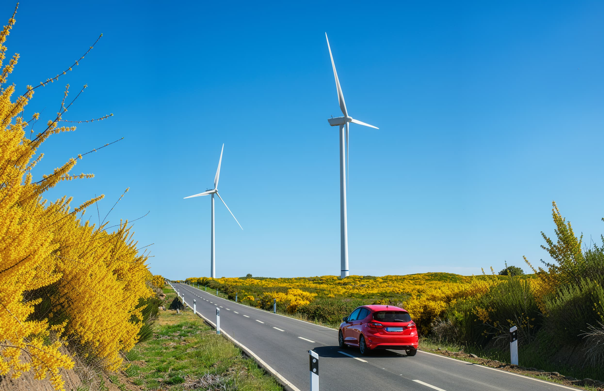

ТОВ «УЛФ-ФІНАНС» розглядає сталий розвиток та ESG як невід’ємну складову
довгострокової
стратегії Компанії та основу створення стійкої цінності для
клієнтів, партнерів, працівників,
суспільства та держави. Компанія прагне бути
відповідальним
фінансовим партнером, роботодавцем
та учасником економічного розвитку України.
Саме тому принципи сталого розвитку та ESG інтегруються у бізнес-процеси, систему управління, підходи до фінансування та корпоративну культуру.
Під час прийняття рішень ТОВ «УЛФ-ФІНАНС» враховує не лише фінансові результати, а й екологічні, соціальні та управлінські аспекти діяльності. Відповідальне фінансування, прозоре корпоративне управління та ефективне управління ризиками є необхідними умовами довгострокової стійкості бізнесу та сталого розвитку клієнтів Компанії.
Створювати можливості для розвитку українського бізнесу через відповідальні фінансові рішення, поєднуючи професійну експертизу, інноваційний підхід, прозорість, етичні принципи ведення бізнесу та довгострокове партнерство.
ТОВ «УЛФ-ФІНАНС» перебуває на етапі системної інтеграції ESG-принципів у свою діяльність. ESG розглядається не як окремий проєкт чи регуляторна вимога, а як інструмент підвищення ефективності управління, мінімізації ризиків, розвитку відповідального фінансування та формування довгострокових конкурентних переваг.
у процеси фінансування
та управління ризиками

ULF усвідомлює роль фінансового сектору у формуванні відповідальної економіки та підтримці сталого розвитку. Як лізингова компанія, ULF може впливати на розвиток підприємництва через фінансові рішення: підтримувати впровадження сучасних технологій, оновлення основних засобів, підвищення ефективності бізнесу та відповідальне ставлення до довкілля і суспільства.
Компанія прагне поступово розширювати практику врахування ESG-факторів у своїй діяльності, поєднуючи економічну ефективність, соціальну відповідальність та екологічну свідомість.
Першим важливим кроком на цьому шляху є формування ESG-системи ULF, яка створює основу для подальшого розвитку ESG-стратегії, підготовки нефінансової звітності та інтеграції принципів сталого розвитку в ключові напрями діяльності Компанії.
що формують ESG-підхід ULF
Корпоративне управління та ESG-підхід ТОВ «УЛФ-ФІНАНС» базуються на вимогах законодавства України, принципах сталого розвитку, міжнародних рекомендаціях у сфері екологічної та соціальної відповідальності, а також практиках відповідального фінансування.
Компанія розглядає ESG як важливий елемент довгострокового розвитку та інтегрує екологічні, соціальні й управлінські аспекти в процеси прийняття рішень, управління ризиками та взаємодії із зацікавленими сторонами.
Для забезпечення системного підходу до ESG впроваджуються внутрішні політики, процедури та контрольні механізми, спрямовані на управління екологічними й соціальними ризиками, розвиток відповідального фінансування, підтримку етичної ділової поведінки та дотримання прав людини.
Принципи, закладені у внутрішніх документах, враховуються під час ухвалення бізнес-рішень, оцінки ризиків, розробки продуктів, взаємодії з клієнтами, партнерами та працівниками. ULF також сприяє поширенню принципів відповідального ведення бізнесу серед клієнтів, постачальників, партнерів та інших учасників ланцюга створення цінності.
Важливим елементом ESG-підходу є формування та розвиток системи управління екологічними й соціальними ризиками, яка інтегрується у процеси фінансування та управління ризиками.
Під час реалізації державних і міжнародних програм фінансування ТОВ «УЛФ-ФІНАНС»
враховує вимоги уповноважених державних установ, міжнародних фінансових організацій
та партнерів щодо управління екологічними
й соціальними ризиками.
Компанія продовжує розвивати внутрішні процедури ESG Screening, екологічної
та соціальної належної перевірки — ESDD, моніторингу ризиків та реагування на
екологічні й соціальні інциденти для подальшої інтеграції ESG-принципів у ключові
напрями діяльності.
та ділової поведінки
та соціальними ризиками